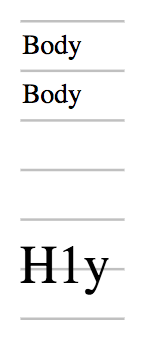

The line-height-step CSS property sets the step unit for line box heights. When the property is set, line box heights are rounded up to the closest multiple of the unit.
/* Point values */ line-height-step: 18pt; /* Global values */ line-height-step: inherit; line-height-step: initial; line-height-step: revert; line-height-step: unset;
The line-height-step property is specified as any one of the following:
<length>.<length>{{cssinfo}}
In the following example, the height of line box in each paragraph is rounded up to the step unit. The line box in <h1> does not fit into one step unit and thus occupies two, but it is still centered within the two step unit.
:root {
font-size: 12pt;
--my-grid: 18pt;
line-height-step: var(--my-grid);
}
h1 {
font-size: 20pt;
margin-top: calc(2 * var(--my-grid));
}
The result of these rules is shown below in the following screenshot:

{{Compat}}